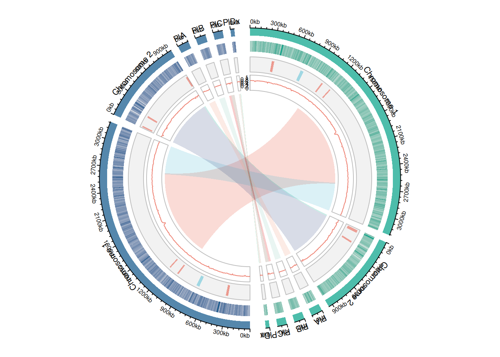
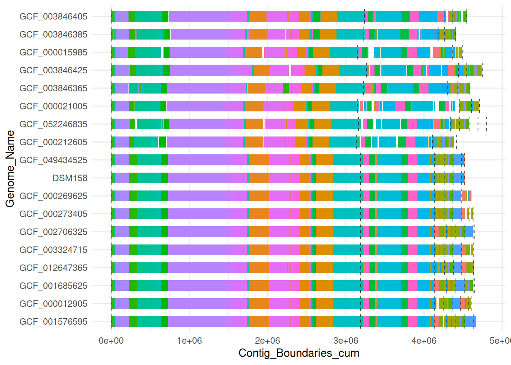
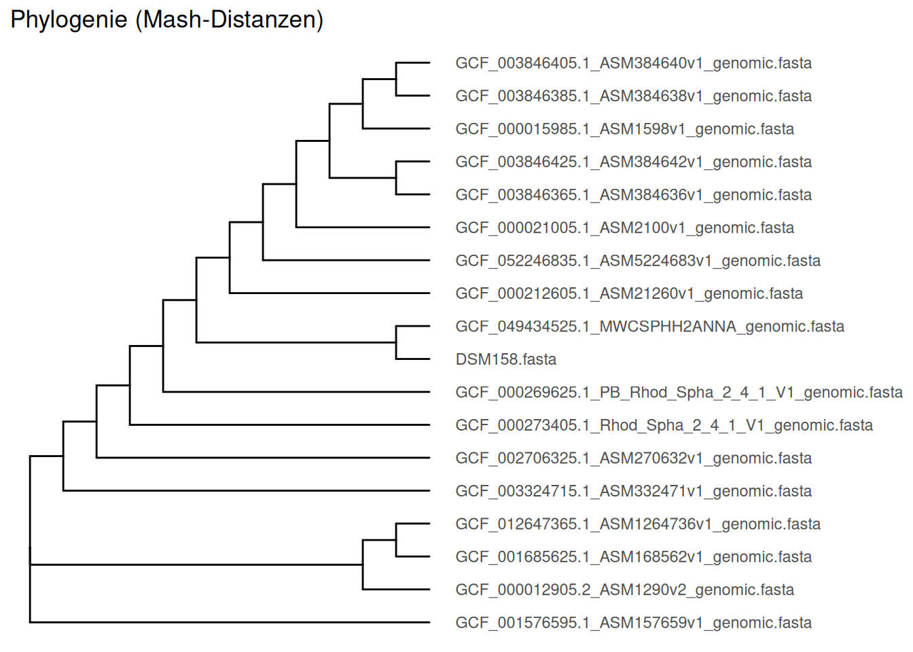

library(Biostrings) # version 2.70.3
library(rtracklayer) # version 1.62.0
library(GenomicRanges) # version 1.54.1
library(circlize) # version 0.4.16
library(data.table) # version 1.17.8
library(RColorBrewer) # version 1.1-3
library(ggsci) # version 4.0.0
library(scales) R scripts for: “Hybrid genome assemblies of R. sphaeroides DSM158 and its substrain H2”
Circos plot of the assemblies using circlize
Loading the required packages
Import the genomes and the genome annotations
genomeA <- readDNAStringSet("/home/Drives/HDD03_06T_SDE/anna/SyntenyPlotDSMSubH2/DSM158/Cereibacter_sphaeroides_reoriented.fasta")
gffA <- import("/home/Drives/HDD03_06T_SDE/anna/SyntenyPlotDSMSubH2/DSM158/annot.gff")
genomeB <- readDNAStringSet("/home/Drives/HDD03_06T_SDE/anna/SyntenyPlotDSMSubH2/SubH2/GCF_049434525.1_MWCSPHH2ANNA_genomic.fasta")
gffB <- import("/home/Drives/HDD03_06T_SDE/anna/SyntenyPlotDSMSubH2/SubH2/genomic.gff")Tidying the sequence names (remove file extension) and rename the chromosomes
#remove the file extensions (.fasta or .gff) from the sequence names
names(genomeA) <- sub(" .*", "", names(genomeA))
names(genomeB) <- sub(" .*", "", names(genomeB))
seqlevels(gffA) <- sub(" .*", "", seqlevels(gffA))
seqlevels(gffB) <- sub(" .*", "", seqlevels(gffB))
#Rename the chromosomes A_... or B_...
new_namesA <- paste0("A_", names(genomeA))
new_namesB <- paste0("B_", names(genomeB))
#Extract the lengths for each chromosome
chrom_lensA <- data.frame(chr=new_namesA, start=0, end=width(genomeA))
chrom_lensB <- data.frame(chr=new_namesB, start=0, end=width(genomeB))
chrom_lens <- rbind(chrom_lensA, chrom_lensB)
#Initialize the sectors for circlize
chrom_lens$chr <- as.character(chrom_lens$chr)Create a sliding window (for the calculation of gene densities and GC content) of size 10,000 bp
win_size <- 10000
windowsA <- tileGenome(seqlengths(genomeA), tilewidth=win_size, cut.last.tile.in.chrom=TRUE)
windowsB <- tileGenome(seqlengths(genomeB), tilewidth=win_size, cut.last.tile.in.chrom=TRUE)Calculate the gene densities
genesA <- gffA[gffA$type=="gene"]
gene_countsA <- countOverlaps(windowsA, genesA)
gendichteA <- data.frame(
chr=factor(paste0("A_", seqnames(windowsA)), levels=new_namesA),
start=start(windowsA), end=end(windowsA), value=gene_countsA
)
genesB <- gffB[gffB$type=="gene"]
gene_countsB <- countOverlaps(windowsB, genesB)
gendichteB <- data.frame(
chr=factor(paste0("B_", seqnames(windowsB)), levels=new_namesB),
start=start(windowsB), end=end(windowsB), value=gene_countsB
)Calculate the GC content
calc_gc <- function(genome, windows, prefix) {
vals <- numeric(length(windows))
for (i in seq_along(windows)) {
chr <- as.character(seqnames(windows[i]))
seq <- subseq(genome[[chr]], start(windows[i]), end(windows[i]))
vals[i] <- sum(letterFrequency(seq, c("G","C"), as.prob=TRUE))
}
data.frame(
chr=factor(paste0(prefix, seqnames(windows)), levels=c(new_namesA,new_namesB)),
start=start(windows), end=end(windows), value=vals
)
}
gcA <- calc_gc(genomeA, windowsA, "A_")
gcB <- calc_gc(genomeB, windowsB, "B_")Data for the phage sequences (PHASTER web-server)
repeatA <- data.frame(
chr = c("1","1","1","1", "1", "2", "2", "2"),
start = c(299942, 312405, 714792, 1045831, 1184739, 16443, 36955, 184600),
end = c(314808, 334525, 756993, 1067027, 1202250, 38142, 54813, 208162),
type = c("Incomplete","Incomplete","Questionable","Incomplete", "Incomplete","Incomplete", "Incomplete","Incomplete")
)
repeatB <- data.frame(
chr = c("NZ_CP186561.1","NZ_CP186561.1","NZ_CP186561.1","NZ_CP186561.1", "NZ_CP186561.1", "NZ_CP186562.1", "NZ_CP186562.1", "NZ_CP186562.1"),
start = c(299941, 312404, 714790, 1045832, 1184740, 9996, 157638, 920625),
end = c(314807, 333081, 756989, 1067028, 1202251, 27853, 181200, 944010),
type = c("Incomplete","Incomplete","Questionable","Incomplete", "Incomplete","Incomplete", "Incomplete","Incomplete")
)
repeatA$chr <- paste0("A_", repeatA$chr)
repeatB$chr <- paste0("B_", repeatB$chr)
repeat_df <- rbind(repeatA, repeatB)Read the coordinates from a MUMMer coordinates file (for the synteny track)
read_mummer_coords <- function(file){
raw <- readLines(file)
header_line <- grep("\\[S1\\]", raw)
data_lines <- raw[(header_line+2):length(raw)]
data_clean <- gsub("\\|", "", data_lines)
data_clean <- gsub("\\s+", " ", data_clean)
coords <- read.table(text=data_clean, header=FALSE, stringsAsFactors=FALSE)
if(ncol(coords)==8){
colnames(coords) <- c("startA","endA","startB","endB","lenA","lenB","identity","chrA")
coords$chrB <- coords$chrA
} else if(ncol(coords)==11){
colnames(coords) <- c("startA","endA","startB","endB",
"lenA","lenB","identity",
"lenRef","lenQry","chrA","chrB")
} else if(ncol(coords)==13){
colnames(coords) <- c("startA","endA","startB","endB",
"lenA","lenB","identity",
"lenRef","lenQry","covRef","covQry","chrA","chrB")
} else {stop("Unbekanntes Format!")}
coords
}
coords <- read_mummer_coords("/home/Drives/HDD03_06T_SDE/anna/SyntenyPlotDSMSubH2/MUMer/synteny.coords")
synteny <- data.frame(
chrA = paste0("A_", coords$chrA),
startA = coords$startA,
endA = coords$endA,
chrB = paste0("B_", coords$chrB),
startB = coords$startB,
endB = coords$endB
)Color palette for the links (npg palette from the ggsci package) and for the other tracks
link_colors <- c(pal_npg("nrc", alpha = 0.2)(10),
alpha("#00d087B2",0.2),
alpha("#0c5f88b2",0.2)
)
colorA <- "#00a087B2" # Green for genome A (DSM158)
colorB <- "#0c5488b2" # Blue for genome B (SubH2)
# match genomes wth colors
chrom_colors <- ifelse(grepl("^A_", chrom_lens$chr), colorA, colorB)Prepare the new chromosome names
# Chromosome-IDs in the plot
chrom_ids <- chrom_lens$chr
# New names (ordered)
new_labels <- c("Chromosome 1", "Chromosome 2", "PlA",
"PlB", "PlC", "PlDx","Chromosome 1",
"Chromosome 2", "PlA", "PlB", "PlC", "PlDx")
# Control if there are the same number og new labels and old labels
stopifnot(length(chrom_ids) == length(new_labels))
# Match new labels and old labels
names(new_labels) <- chrom_idsCircos plot
circos.clear()
circos.par("start.degree"=90, gap.degree=c(rep(3,5),6,rep(3,5),6), cell.padding = c(0.02, 0, 0.02, 0), track.margin=c(0.01,0.01))
circos.initialize(factors=chrom_lens$chr,
xlim=cbind(chrom_lens$start, chrom_lens$end))
# Chromosomes at the outside
circos.trackPlotRegion(
ylim=c(0,1),
track.height=0.05,
bg.border=NA,
bg.col = chrom_colors,
panel.fun=function(x,y){
chr <- CELL_META$sector.index
circos.text(
CELL_META$xcenter,
CELL_META$ycenter+ mm_y(4),
col = "black",
labels = new_labels[chr], # Choosing name for each sector
facing="inside",
niceFacing=F,
cex=0.7
)
circos.genomicAxis(h="top", labels.cex = 0.5)
}
)Note: 1 point is out of plotting region in sector 'A_1', track '1'.Note: 1 point is out of plotting region in sector 'A_2', track '1'.Note: 1 point is out of plotting region in sector 'A_3', track '1'.Note: 1 point is out of plotting region in sector 'A_4', track '1'.Note: 1 point is out of plotting region in sector 'A_5', track '1'.Note: 1 point is out of plotting region in sector 'A_6', track '1'.Note: 1 point is out of plotting region in sector 'B_NZ_CP186561.1',
track '1'.Note: 1 point is out of plotting region in sector 'B_NZ_CP186562.1',
track '1'.Note: 1 point is out of plotting region in sector 'B_NZ_CP186563.1',
track '1'.Note: 1 point is out of plotting region in sector 'B_NZ_CP186564.1',
track '1'.Note: 1 point is out of plotting region in sector 'B_NZ_CP186565.1',
track '1'.Note: 1 point is out of plotting region in sector 'B_NZ_CP186566.1',
track '1'.# Track 1: gene densities
maxA <- max(gendichteA$value)
maxB <- max(gendichteB$value)
col_funA <- colorRamp2(c(0, maxA), c("#eeeeee", "#00a087B2")) # grey → green
col_funB <- colorRamp2(c(0, maxB), c("#eeeeee", "#0c5488b2")) # grey → blue
gendichte_df <- rbind(gendichteA, gendichteB)
circos.track(ylim=c(0,1), track.height=0.1, bg.border=NA,
panel.fun=function(region,value,...){
chr <- CELL_META$sector.index
idx <- gendichte_df$chr == chr
for(i in which(idx)){
col_use <- ifelse(grepl("^A_", chr), col_funA(gendichte_df$value[i]), col_funB(gendichte_df$value[i]))
circos.rect(gendichte_df$start[i], 0,
gendichte_df$end[i], 1,
col=col_use, border=NA)
}
})
# Track 2: Phage sequences
repeat_types <- unique(repeat_df$type)
colors_repeats <- setNames(pal_npg("nrc", alpha = 0.7)(2)[1:length(repeat_types)], repeat_types)
circos.track(
ylim = c(0,1),
track.height = 0.1,
bg.border = "grey",
bg.col = "grey95",
panel.fun = function(region, value, ...) {
chr <- CELL_META$sector.index
idx <- repeat_df$chr == chr
if(any(idx)) {
ybottom <- CELL_META$ylim[1]
ytop <- CELL_META$ylim[2]
circos.rect(
xleft = repeat_df$start[idx],
ybottom= ybottom,
xright = repeat_df$end[idx],
ytop = ytop,
col = adjustcolor(colors_repeats[repeat_df$type[idx]], alpha.f=0.7),
border = NA
)
}
}
)
# Track 3: GC content
gc_df <- rbind(gcA,gcB)
circos.track(ylim=c(0,1), track.height=0.1, bg.border="grey", bg.col=NA,
panel.fun=function(region,value,...){
chr <- CELL_META$sector.index
idx <- gc_df$chr == chr
circos.lines((gc_df$start[idx]+gc_df$end[idx])/2, gc_df$value[idx],
col="#e64b35b2", lwd=1)
})
first_chr <- chrom_lens$chr[1]
circos.yaxis(side="left", sector.index=first_chr,
labels.cex=0.5, col="darkgrey", labels.col="black", tick.length=mm_y(2))
# Innermost track: synteny
for(i in 1:nrow(synteny)){
if(synteny$chrA[i] %in% chrom_lens$chr &&
synteny$chrB[i] %in% chrom_lens$chr){
circos.link(
sector.index1=synteny$chrA[i],
point1=c(synteny$startA[i], synteny$endA[i]),
sector.index2=synteny$chrB[i],
point2=c(synteny$startB[i], synteny$endB[i]),
col = link_colors[i],
border=NA
)
}}
Synteny and phylogenetic tree of 18 complete R. sphaeroides genomes
Visualization of progressiveMauve Output
Loading required packages:
library(ggplot2) # version 4.0.0
library(dplyr) # version 1.1.4
library(stringr) # version 1.5.1
library(scales) # version 1.3.0
library(readxl) # version 1.4.3Function for parsing the progressiveMauve output
read_xmfa <- function(file) {
lines <- readLines(file)
cat("Number of read lines:", length(lines), "\n")
blocks <- list()
block_id <- 0
current_block <- NULL
for (line in lines) {
# Skip comment lines
if (startsWith(line, "#")) next
# Block-deliminter
if (trimws(line) == "=") {
if (!is.null(current_block)) {
blocks[[block_id]] <- current_block
cat("Added Block", block_id, "with", nrow(current_block), "lines\n")
}
current_block <- NULL
next
}
# Process header-lines
if (startsWith(line, ">")) {
cat("Process line:", line, "\n")
# Example: >1:100-200 +
pattern <- "^>\\s+([0-9]+):([0-9]+)-([0-9]+)\\s+([+-])\\s+(.*\\_*[0-9]+)\\.{1}.*"
match <- regmatches(line, regexec(pattern, line))[[1]]
if (length(match) == 6) {
genome <- as.integer(match[2])
start <- as.integer(match[3])
end <- as.integer(match[4])
strand <- match[5]
genome_name <- match[6]
if (is.null(current_block)) {
block_id <- block_id + 1
current_block <- data.frame(
Genome = integer(),
Start = integer(),
End = integer(),
Strand = character(),
Block = integer(),
Genome_Name = character(),
stringsAsFactors = FALSE
)
}
current_block <- rbind(current_block, data.frame(
Genome = genome,
Start = start,
End = end,
Strand = strand,
Block = block_id,
Genome_Name = genome_name,
stringsAsFactors = FALSE
))
} else {
cat("No match for line:", line, "\n")
}
}
}
# Add last block, if available
if (!is.null(current_block)) {
blocks[[block_id]] <- current_block
cat("Added last block", block_id, "with", nrow(current_block), "lines\n")
}
# Convert all blocks into one dataframe
df <- do.call(rbind, blocks)
cat("Final number of rows in the dataframe:", nrow(df), "\n")
return(df)
}Some important additional data
Location of the progressiveMauve output (
xmfa_file)Custom genome order, here as vector (
genome_order)An excel file listing all contig boundaries (
df)
xmfa_file <- "/home/Drives/HDD03_06T_SDE/anna/SyntenyPlotDSMSubH2/genomes/reoriented/C_sph_genomes.xmfa"
genome_order <- c("GCF_001576595", "GCF_000012905", "GCF_001685625",
"GCF_012647365", "GCF_003324715", "GCF_002706325",
"GCF_000273405", "GCF_000269625", "DSM158",
"GCF_049434525", "GCF_000212605", 'GCF_052246835',
"GCF_000021005", "GCF_003846365", "GCF_003846425",
"GCF_000015985", "GCF_003846385", "GCF_003846405")
df <- read_excel("/home/anna/R/Genome_Overview_Rsph.xlsx")Reading the xmfa file
To simplify the visualization only blocks located in two or more assemblies are processed. Therefor we removed all unique blocks (xmfa_data_short).
xmfa_data <- read_xmfa(xmfa_file)
xmfa_data_short <- xmfa_data[(1:1683),]To plot the different data together, we need to reorder our dataframes (df and xmfa_data_short) after the genome_order vector
df$Genome_Name <- factor(
df$Genome_Name,
levels = genome_order
)
xmfa_data_short$Genome_Name <- factor(
xmfa_data_short$Genome_Name,
levels = genome_order
)Plotting the data with ggplot2
ggplot(xmfa_data_short,
aes(y = Genome_Name)
) +
geom_rect( #LCB from progressiveMauve
aes(xmin = Start, xmax = End,
ymin = as.numeric(Genome_Name) - 0.3,
ymax = as.numeric(Genome_Name) + 0.3,
fill = factor(Block))
) +
geom_segment( #Contig boundaries
data = df,
aes(
x = Contig_Boundaries_cum,
xend = Contig_Boundaries_cum,
y = as.numeric(Genome_Name) - 0.4,
yend = as.numeric(Genome_Name) + 0.4
),
color = "grey20",
linetype = "dashed",
linewidth = 0.3
) +
scale_y_discrete(limits = genome_order) + # custom genome order
guides(fill = "none")+ #remove legend
theme_minimal()
#Finetuning of the figure is made with inkscapeGenerating a phylogeny tree using a distance matrix from mash
Loading the required packages
library(ape) # version 5.7-1
Attaching package: 'ape'The following object is masked from 'package:dplyr':
whereThe following object is masked from 'package:circlize':
degreeThe following object is masked from 'package:Biostrings':
complementlibrary(tidyverse) # version 2.0.0── Attaching core tidyverse packages ──────────────────────── tidyverse 2.0.0 ──
✔ forcats 1.0.0 ✔ readr 2.1.5
✔ lubridate 1.9.3 ✔ tibble 3.2.1
✔ purrr 1.0.2 ✔ tidyr 1.3.1── Conflicts ────────────────────────────────────────── tidyverse_conflicts() ──
✖ lubridate::%within%() masks IRanges::%within%()
✖ dplyr::between() masks data.table::between()
✖ readr::col_factor() masks scales::col_factor()
✖ dplyr::collapse() masks Biostrings::collapse(), IRanges::collapse()
✖ dplyr::combine() masks BiocGenerics::combine()
✖ purrr::compact() masks XVector::compact()
✖ dplyr::desc() masks IRanges::desc()
✖ purrr::discard() masks scales::discard()
✖ tidyr::expand() masks S4Vectors::expand()
✖ dplyr::filter() masks stats::filter()
✖ dplyr::first() masks data.table::first(), S4Vectors::first()
✖ lubridate::hour() masks data.table::hour()
✖ lubridate::isoweek() masks data.table::isoweek()
✖ dplyr::lag() masks stats::lag()
✖ dplyr::last() masks data.table::last()
✖ lubridate::mday() masks data.table::mday()
✖ lubridate::minute() masks data.table::minute()
✖ lubridate::month() masks data.table::month()
✖ ggplot2::Position() masks BiocGenerics::Position(), base::Position()
✖ lubridate::quarter() masks data.table::quarter()
✖ purrr::reduce() masks GenomicRanges::reduce(), IRanges::reduce()
✖ dplyr::rename() masks S4Vectors::rename()
✖ lubridate::second() masks data.table::second(), S4Vectors::second()
✖ lubridate::second<-() masks S4Vectors::second<-()
✖ dplyr::slice() masks XVector::slice(), IRanges::slice()
✖ purrr::transpose() masks data.table::transpose()
✖ lubridate::wday() masks data.table::wday()
✖ lubridate::week() masks data.table::week()
✖ ape::where() masks dplyr::where()
✖ lubridate::yday() masks data.table::yday()
✖ lubridate::year() masks data.table::year()
ℹ Use the conflicted package (<http://conflicted.r-lib.org/>) to force all conflicts to become errorslibrary(reshape2) # version 1.4.4
Attaching package: 'reshape2'
The following object is masked from 'package:tidyr':
smiths
The following objects are masked from 'package:data.table':
dcast, meltlibrary(ggplot2) # version 4.0.0
library(ggtree) # version 3.99.0ggtree v3.99.0 Learn more at https://yulab-smu.top/contribution-tree-data/
Please cite:
Shuangbin Xu, Lin Li, Xiao Luo, Meijun Chen, Wenli Tang, Li Zhan, Zehan
Dai, Tommy T. Lam, Yi Guan, Guangchuang Yu. Ggtree: A serialized data
object for visualization of a phylogenetic tree and annotation data.
iMeta 2022, 1(4):e56. doi:10.1002/imt2.56
Attaching package: 'ggtree'
The following object is masked from 'package:tidyr':
expand
The following object is masked from 'package:ape':
rotate
The following object is masked from 'package:Biostrings':
collapse
The following object is masked from 'package:IRanges':
collapse
The following object is masked from 'package:S4Vectors':
expandLoading the output from mash:
It should be a comma-separated file with the following columns:
Column 1: Name of the first genome
Column 2: Name of the second genome
Column 3: Distance between the genomes
Then we calculated the distance matrix
# Mash output: col1=genome1, col2=genome2, col3=distance
dist_tab <- read.table("/home/Drives/HDD03_06T_SDE/anna/SyntenyPlotDSMSubH2/mash/dist.tab",
header=FALSE,
stringsAsFactors = FALSE)
# Calculate distance matrix
dist_mat <- reshape2::acast(dist_tab, V1~V2, value.var="V3", fill=0)
dist_mat <- as.dist(dist_mat)We used the distance matrix to calculate the neighbor-joining tree and plotted this tree using ggtree
# Neighbor-Joining tree calculation
tree <- nj(dist_mat)
#set global option to ignore negative edges
options(ignore.negative.edge=TRUE)
#plotting the tree using ggtree
ggtree(tree) +
geom_tiplab(align = T, as_ylab = T) +
geom_hilight(node = c(3,4), color = "lightgreen")Scale for y is already present.
Adding another scale for y, which will replace the existing scale.